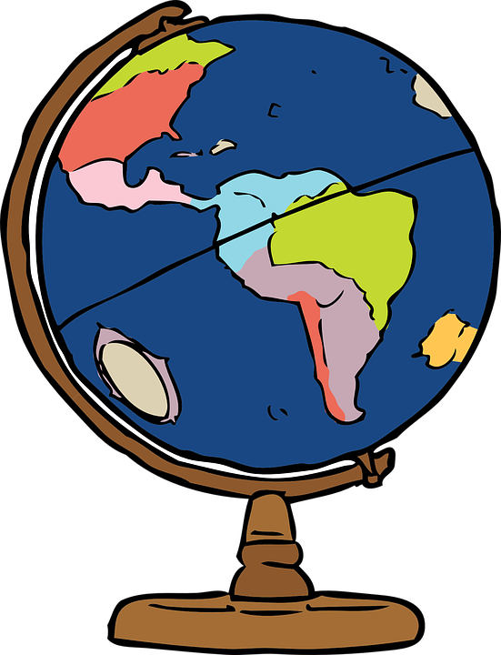

|
 |
University
of Auckland
2016
Semester 2 / Geography 771:
Spatial Analysis and Geocomputation
|
|
My
name is Daniel Baigent and this website is used to post the map outputs
for Geography 771. These projects incorporate the use of a range of
open source mapping software, including Carto, Mapbox, Leaflet, and
scripting through Adobe Brackets.
The
example below is a basic web map of a Waitakere Rangers Regional Park.
This was created using Leaflet, through the use of Google Earth and
converted to GeoJSON using the geojson.io API.
|